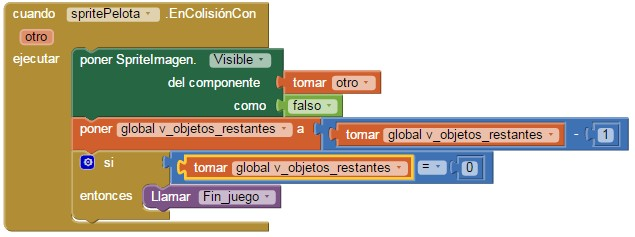

3.5. Atrapa objetos
Vamos a programar un nuevo juego un poco más sofisticado, para seguir aprendiendo conceptos y componentes. Se trata de conducir una pelota a través de un escenario de juego para ir atrapando objetos. Habrá que gestionar el movimiento de la pelota, la ubicación de los objetos, el marcador, la duración del juego, etc.
Diseño de los componentes
Vamos a utilizar estos componentes para hacer la aplicación:
- Un componente Lienzo que se encuentra en Dibujo y animación
- Un componente Pelota que se encuentra en Dibujo y animación y que colocaremos dentro del Lienzo.
- 5 componentes SpriteImagen que se encuentra en Dibujo y animación y que colocaremos dentro del Lienzo. Estos los renombraremos como Sprite_zombi_1, Sprite_zombi_2, etc.
- Un componente botón para reiniciar el juego.
- Un componente Etiqueta, que llamaremos E_tiempo, a la derecha del botón Reiniciar,
- Un componente DisposiciónHorizontal y un componente DisposiciónVerticla para el botón y la etiqueta.
- Un componente Acelerómetro, dentro del apartado Sensores. Lo llamaremos Inclinación.
- Un componente Reloj, dentro del apartado Sensores. Lo llamaremos Tiempo.
- Un componente SensorDeOrientación, dentro del apartado Sensores. Estos tres últimos componentes no son visibles, así que aparecerá en la parte inferior del Visor, en la zona destinada a componentes no visibles.
Configurar el escenario de juego
De momento indicaremos en el Diseñador que la altura y la anchura del Lienzo se ajusten automáticamente al contenedor.
En cuanto a las propiedades de la Pelota, definiremos que su Radio es 15, para que se vea suficientemente grande en el escenario. El color configurarlo en función de la imagen que pongáis de fondo del escenario.
Para que el Lienzo siempre ocupe todo el espacio de la pantalla del dispositivo debemos definir algunos bloques dentro del bloque mostaza
cuando.Screen1.Inicializar. Todo lo que incluyamos en este bloque se ejecutará en cuanto se abra la pantalla, es decir, en este caso será lo primero que suceda cuando se ejecute la aplicación.
Tenemos que adaptar el escenario a los límites de la pantalla, tomando las propiedades de ancho y largo de la pantalla de cada dispositivo. Además, evitaremos que la pantalla rote automáticamente poniendo el valor de la propiedad OrientaciónDeLaPantalla como 1. Con este valor la pantalla siempre mantendrá la orientación vertical, aunque inclinemos el dispositivo. No obstante, como esto no funciona con todos los dispositivos, en algunos casos será necesario desactivar manualmente la rotación de la pantalla en el propio dispositivo.
En nuestro caso hemos reducido la altura del escenario en 150 unidades, para dar espacio suficiente a otros objetos que añadiremos más adelante.
El movimiento de la pelota
Para que la pelota ruede por el escenario tendremos que inclinar el dispositivo. La pelota rodará siempre hacia la parte del escenario que se encuentre más cerca del suelo. Para ello vamos a utilizar los datos que nos proporciona el componente Acelerómetro (recordar que le hemos cambiado el nombre por Inclinación)
Ahora utilizaremos el bloque del componente Inclinación cuando Inclinación CambioEnAceleración para mover la pelota. Este bloque incluye tres variables, cada una de las cuales almacena la inclinación del objeto en uno de los ejes de coordenadas. Vamos a hacer que la pelota tenga una dirección dependiendo de los valores de estas tres variables.
Para conocer la aceleración en el eje X, tenemos que dejar el puntero del ratón inmóvil durante un segundo sobre el campo xAccel color naranja que hay dentro del bloque mostaza. Una vez aparezcan las opciones tomar y poner para esa variable, podremos arrastrar el bloque tomar hasta su lugar. Lo mismo hacemos para yAccel
El bloque llamar Pelota MoverA se encuentra en los bloques del componente Pelota.
Es buen momento para experimentar qué sucede con cada una de las variables cuando inclinamos el dispositivo. Podemos invertir un poco de tiempo probando, hasta que entendamos cómo afecta la inclinación a cada una de estas variables. Veremos que para la Y los valores comprenderán de -10 (cuando el dispositivo está vertical y apuntando hacia el suelo) a 10 (cuando el dispositivo está vertical, y hacia arriba). Para la X, los valores comprenderán también entre 10 (cuando está completamente inclinado con la pantalla hacia la izquierda) y -10 cuando está completamente inclinado con la pantalla hacia la derecha).
En cuanto a la Z, inicialmente sin uso en este juego, irá de 10 (cuando el dispositivo tiene la pantalla hacia arriba) a -10 (cuando el dispositivo tenga la pantalla hacia abajo, paralela al suelo).
Cuando hagamos esto veremos que el comportamiento vertical, el de la coordenada Y, será el esperado, es decir, que la pelota caerá hacia nosotros cuando inclinemos el dispositivo hacia nuestro lado, y se alejará de nosotros cuando inclinemos el móvil en la dirección contraria. Sin embargo, cuando inclinemos el dispositivo hacia la derecha, en el eje X, la pelota caerá hacia la izquierda, y viceversa. Para solucionar este problema, y adaptar el funcionamiento al comportamiento natural de una pelota, tendremos que modificar el bloque que indica el posicionamiento en la componente X de la coordenada. En lugar de sumarle el valor de xAccel le sumaremos el valor de restar xAccel a 1.
Crear los objetos a atrapar
A continuación hay que crear cada Sprite que vaya a aparecer en el escenario. La imagen para el Sprite la podéis buscar en http://www.iconarchive.com/. Si ponéis la palabra zombie en el buscador os aparecen diversas imágenes, podéis elegir la misma imagen para los 5 Sprite o una imagen distinta para cada sprite. Seleccionar la opción de 32 pixel, se abrirá una ventana nueva con la imagen, hacéis clic en el botón de la derecha y seleccionar la opción Guardar como. Asegurarse de que se guarda en formato .png
Desde la ventana del Diseñador, subimos las imágenes para cada Sprite_zombi
Posición de los zombis
Una vez creados los cinco objetos tenemos que colocarlos en el escenario. Lo haremos con el bloque llamar.Sprite_zombi_1.MoverA. Especificaremos para cada objeto una posición aleatoria. Con los bloques azules entero aleatorio entre definiremos en qué coordenada X aparecerá la esquina superior del sprite dentro del escenario. Especificaremos un 0 para indicar que el objeto puede aparecer desde el margen izquierdo del escenario. A continuación le diremos con el bloque verde Escenario.Ancho que el límite máximo es el límite derecho del escenario. Pero, atención, si el bloque azul entero aleatorio.entre nos devolviera precisamente un valor de X muy cercano al límite derecho la mayor parte del enemigo sobrepasaría el límite derecho del escenario, y no sería visible. Para solucionar esto se resta a Escenario.Ancho el ancho del sprite del enemigo, Sprite_zombi_1.Ancho.
Haremos lo mismo con la coordenada vertical Y, y repetiremos los mismos bloques cinco veces, porque hay cinco objetos iguales.
Cada vez que el juego se reinicie tendremos que colocar los objetos en el escenario, y deberemos volver a usar todos estos bloques, así que lo mejor, para no tener que escribir el mismo código varias veces cuando es tan grande, será definir un procedimiento, donde incluiremos todos los bloques que sirven para colocar los objetos. El bloque para definir procedimientos se encuentra dentro del cajón Procedimientos.
Movimiento de los zombis
Una vez colocados los sprite al azar tenemos que hacer que se muevan también aleatoriamente. Para ello vamos a crear otro procedimiento llamado moverZombi:

De esta manera cada sprite tendrá una dirección aleatoria y una velocidad determinada. Podéis cambiar los valores de la velocidad para que unos se muevan más rápidos que otros.
Implementar la mecánica del juego
El jugador deberá inclinar el dispositivo para guiar a la pelota hacia cada uno de los objetos y chocar con ellos. Cada vez que eso suceda deberemos retirar el objeto del escenario. El juego acabará cuando el jugador haya hecho desaparecer todos los objetos.
Para saber cuándo la pelota choca con un objeto utilizaremos el bloque cuando.spritePelota.EnColisiónCon otro ejecutar. Este bloque está dentro del cajón de recursos relacionados con el objeto spritePelota .
Ahora vamos a utilizar un nuevo tipo de recurso, un bloque que no habíamos usado todavía. Este bloque se encuentra dentro del cajón Cualquiercomponente / CualquierSpriteImagen. La diferencia entre este cajón y los que hemos abierto antes es que los bloques contenidos aquí nos permitirán definir acciones que harán referencia a diferentes objetos del mismo tipo. En este caso hará referencia a objetos del tipo SpriteImagen , como son nuestros cinco “zombis”.
Para no tener que repetir el código para cada objeto, usaremos el bloque genérico poner SpriteImagen.Visible del componente como. Este bloque nos permitirá cambian el valor de la propiedad Visible de cualquier componente del tipo SpriteImagen, que especificaremos en el hueco del componente .
Usaremos el parámetro otro del bloque mostaza que hemos añadido antes para indicar a qué objeto concreto queremos referirnos "tomar otro", y estableceremos a falso el valor de la propiedad Visible del objeto, para que desaparezca del escenario.
Gestión del marcador
Tenemos también que mantener un contador de objetos restantes, para saber cuándo se han recogido todos y dar por completada la misión. Para ello usaremos dos variables, v_objetos_totales, y v_objetos_restantes. La primera define el número de objetos que vamos a manejar en cada partida, y la segunda define el número de objetos que quedan por hacer desaparecer. Como siempre, par indicar que estamos definiendo una variable, y que luego sea más fácil identificarla como tal, comenzaremos los nombres con el prefijo v_ .
Cada vez que la pelota choque con un objeto, tendremos que restar 1 al número de objetos restantes. Cuando la variable v _objetos_restantes sea 0 , significará que el jugador ha recogido todos los objetos, y el juego habrá terminado.
Reorganizando los bloques de código
Cuando una aplicación está empezando a crecer, como la nuestra, conviene mirarla un poco “desde lejos” y pensar de qué manera podemos hacer que sea más fácil de manejar, cómo organizarla mejor. Así pues, para facilitar el mantenimiento de nuestro programa, y su lectura, vamos a definir dos procedimientos: Iniciar_juego y Fin_juego. Para ellos abriremos el cajón Procedimiento y arrastraremos dos veces el bloque como procedimiento ejecutar.
En el primero de ellos tendremos que reubicar los objetos, y reiniciar todas las variables que tiene que manejar el juego. Es decir, dejar las cosas listas para empezar a jugar.
Habrá que hacer una llamada al procedimiento Iniciar_juego dentro del bloque cuando Screen1.Inicializar ejecutar , que ahora quedará así.
El procedimiento Fin_juego lo veremos más adelante.
Limitar el tiempo para crear tensión
Para dar mayor interés al juego usaremos un temporizador, un componente Reloj, que limitará el tiempo que tiene el jugador para aplastar a los enemigos. Cuando el tiempo termine, el jugador no podrá eliminar más objetos. Le daremos el nombre Tiempo. Se pretende conocer cuándo pasa cada segundo, así que su propiedad IntervaloDelTemporizador contendrá el valor 1000.
La idea es mostrar siempre en la pantalla el número de segundos restantes, y para eso necesitamos restar un segundo cada vez respecto de la cantidad que queda disponible. Así pues, definiremos el número de segundos disponibles con la variable v_segundos_restantes , y le daremos el valor inicial 30.
En el bloque cuando.Tiempo.Temporizador ejecutar indicaremos que reste 1 a la variable v _segundos_restantes, y que lo muestre en un nuevo objeto de tipo Etiqueta que llamaremos E_tiempo.
¿Cuándo termina el juego?
Cuando la variable v _segundos_restantes alcance el valor 0 (cero) la partida habrá terminado, porque ya no habrá segundos restantes. Podemos implementar esta comprobación añadiendo un bloque mostaza si entonces dentro del bloque cuando.Tiempo.Temporizador ejecutar. Cuando se cumpla la condición del si entonces habrá llegado el momento de hacer una llamada al procedimiento Fin_juego.
El juego también deberá terminar cuando no queden más objetos por recoger. Lo indicaremos con un bloque si entonces dentro del bloque cuando.spritePelota.EnColisiónCon.ejecutar.

Fin del juego
Tenemos entonces que definir qué hacer cuando el juego termine. Una opción sencilla y clara puede ser informar al usuario a través de un texto, y tal vez un sonido. Por ejemplo, podemos escribir el texto “Fin del juego” en la etiqueta E_tiempo. Para ello abriremos el cajón Texto del editor de bloques, y arrastraremos el componente de texto vacío al hueco verde que asigna un valor al texto de la etiqueta E_tiempo.
Extrañamente, ese texto no aparece por mucho tiempo en la pantalla. ¿Por qué?
Si ponemos mucha atención veremos que el texto aparece, pero sólo durante un segundo. Esto se debe a que el programa comprueba en el bloque cuando.Tiempo.Temporizador ejecutar si la variable Segundos_totales vale 0, pero esto sólo se cumple durante un segundo, porque el tiempo sigue contando, así que rápidamente el valor de v_tiempo pasa a ser - 1, que es el valor que se obtiene cuando a 0 le restamos 1. El programa sigue ejecutándose, y en la siguiente ejecución del bloque cuando.Tiempo.Temporizador ejecutar volverá a escribir el valor del contador de segundos encima del texto.
Para evitar esto tenemos que hacer que el bloque cuando.Tiempo.Temporizador ejecutar deje de ejecutarse. Esto se consigue dándole el valor falso a la propiedad TemporizadorHabilitado del componente Tiempo.
También vamos a hacer que los sprite_zombi desaparezcan en el caso de que quede alguno en el escenario, para ello ponemos el valor falso.
Pero atención, si queremos que el programa funcione correctamente la próxima vez, y ejecute el contenido de cuando.Tiempo.Temporizador ejecutar, tendremos que poner el valor de esa propiedad como cierto en el procedimiento Iniciar_juego. Además antes deberemos restablecer el número de segundos restantes a 30, su valor inicial. En caso de olvidarnos de dar a nuestro programa alguna de estas dos instrucciones, el juego se ejecutaría para siempre.
Añadir un botón para empezar de nuevo
Bueno, casi está todo, pero no podemos olvidar incluir un botón “Reiniciar” para que el juego comience de nuevo una vez terminado.
Veremos que cuando iniciamos de nuevo el juego ya no aparecen los zombis, a pesar de que sí vuelve a tener el valor 5 la variable v_objetos_restantes. ¿Por qué?
Bueno, lo que ocurre es hemos olvidado algo. En el procedimiento cuando.spritePelota.EnColisiónCon hacemos desaparecer cada zombi cuando la pelota choca con él. Para que los objetos vuelvan a ser visibles al pulsar el botón Reiniciar tendremos que poner este atributo como cierto de nuevo. Podemos incluir esta instrucción, por ejemplo, dentro el procedimiento Colocar_zombis . Vamos a hacer esto utilizando un bloque disponible dentro de los cajones de cada zombi. Usaremos el bloque verde oscuro que sirve para establecer el estado del atributo Visible. Podemos hacer lo mismo para todos los zombis copiando el bloque del primero y cambiando el nombre del enemigo al que se refiere en cada caso.
Actividad
A partir de este punto cada uno puede mejorar el juego como mejor le parezca, pensando qué quiere que suceda en cada momento, e implementándolo en el programa. Se proponen algunas ideas:
● Como habrás observado, los zombis se paran al llegar al borde del escenario. Para que sigan moviéndose puedes utilizar el siguiente bloque:
● Añadir una imagen de fondo más profesional
● Incluir un sonido cada vez que atrapamos un enemigo
● Poner un contador de puntos, de tal forma que cada vez que se atrape un enemigo se incremente el contador.
Obra publicada con Licencia Creative Commons Reconocimiento Compartir igual 4.0